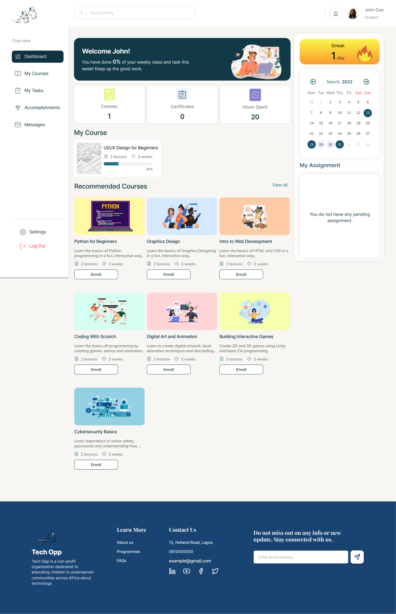
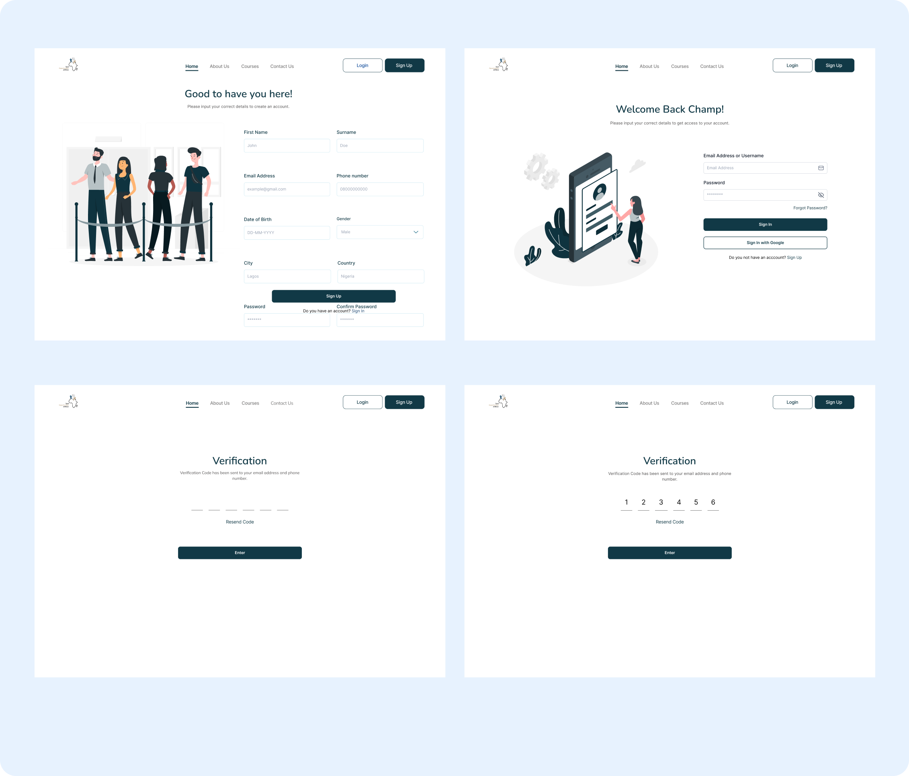
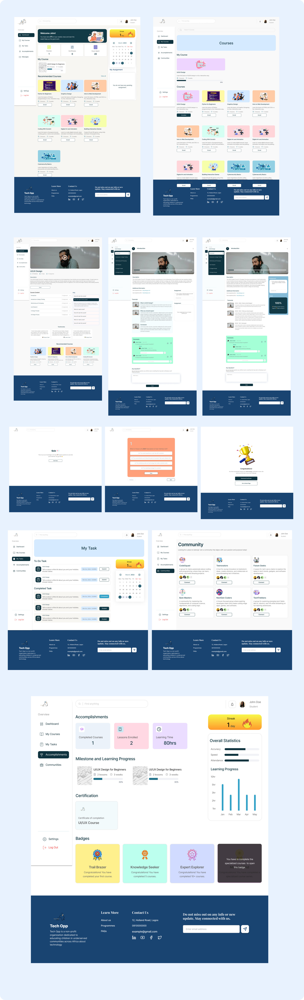

Case Study
Tech Opp
E-Learning
An e-learning platform built for Tech Opp Africa, designed to give children and young people in underserved communities access to structured, engaging tech education — anytime, anywhere.

Overview
The Tech Opp E-Learning Platform is an extension of the Tech Opp Africa mission — delivering structured, accessible, and engaging digital courses to children in underserved communities. The platform supports self-paced learning, progress tracking, and a library of curated tech content designed to make education feel achievable and empowering.
UI/UX Designer
Role
Figma
Tool
2 weeks
Timeline
Problem Statement
Despite the Tech Opp Africa initiative connecting children to technology, there was no dedicated platform for structured learning. Children had access to workshops but no way to continue learning independently — leaving a critical gap in skill development between in-person sessions.
Goal
- Design an intuitive e-learning experience accessible to children with varying digital literacy levels.
- Create a course library with structured learning paths and progress tracking.
- Build a platform that extends the Tech Opp brand while feeling approachable and motivating for young learners.
Typography and Color
#0D1F3C
Primary Dark
#194471
Primary Blue
#3B82F6
Accent Blue
#F59E0B
Highlight
#EFF6FF
Background Tint
#483740
Text Color
Poppins
Primary Typeface
Poppins
Regular
The quick brown fox jumps over the lazy dog.
Thin / Light weight
Secondary Typeface
Semibold
Medium
The quick brown fox jumps over the lazy dog.
Medium / Thin weight
Design Process
A systematic approach to creating user-centered solutions
Research & Discovery
Ideation & Wireframing
Visual Design
Testing & Iteration

